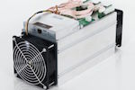
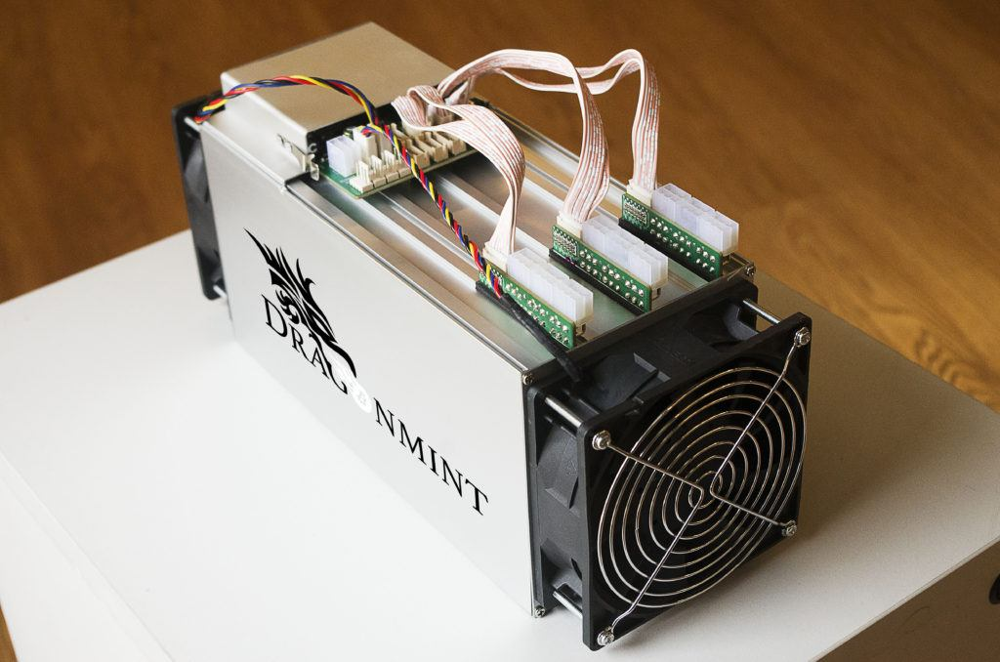

Hobby Bitcoin mining can still be fun and even profitable if you have cheap electricity and get the best and most efficient Bitcoin mining hardware.
It’s important to remember that Bitcoin mining is competitive. If you want bitcoins then you are better off buying bitcoins.
| Pic | Miner | Hash Power | Price | |
|---|---|---|---|---|
| Dragonmint 16T | 16.0 TH/s | $2,729 | ||
| Antminer S7 | 4.73 TH/s | $489.99 | ||
|  | Antminer S9 | 14.0 TH/s | $3,000 | |
| Avalon 6 | 3.50 TH/s | $559.95 | ||
| Antminer R4 | 8.6 TH/s | $1,000 |
Since it’s now impossible to profitably mine Bitcoin with your computer, you’ll need specialized hardware called ASICs.
Here’s what an ASIC miner looks like up close:

The Dragonmint 16T miner.Originally, Bitcoin’s creator intended for Bitcoin to be mined on CPUs (your laptop or desktop computer). However, Bitcoin miners discovered they could get more hashing power from graphic cards. Graphic cards were then surpassed by ASICs (Application Specific Integrated Circuits).
Think of a Bitcoin ASIC as specialized Bitcoin mining computers, Bitcoin mining machines, or “bitcoin generators”. Nowadays all serious Bitcoin mining is performed on dedicated Bitcoin mining hardware ASICs, usually in thermally-regulated data-centers with access to low-cost electricity.